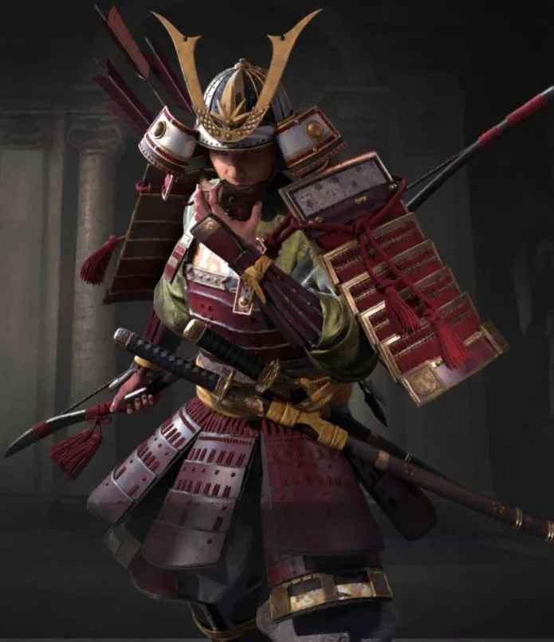
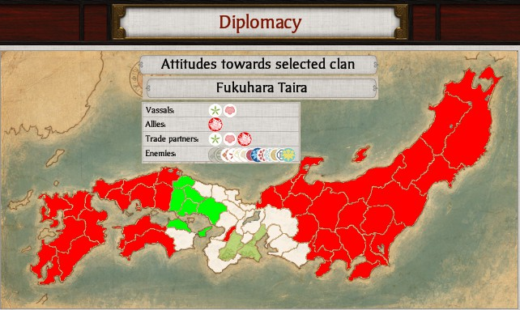

Founder
Name: Minamoto no Yoritomo
Founded: 1192 CE, Kamakura Shogunate
Accomplishments: Unified samurai clans, established military government
Cause of Death: Illness
Location: Kamakura, Japan
Greatest Achievements
- Defended Japan from Mongol invasions (1274, 1281)
- Codified Bushido—way of the warrior
- Established feudal hierarchy and land stewardship
- Built iconic castles like Himeji and Matsumoto
- Maintained centuries of warrior rule until Meiji Restoration
Major Defeats
- Fall of Kamakura Shogunate (1333)
- Onin War and Sengoku chaos (1467–1600)
- Meiji Restoration ends samurai rule (1868)
- Samurai rebellions crushed by imperial army
Timeline
- 1192: Kamakura Shogunate founded
- 1274: First Mongol invasion repelled
- 1600: Tokugawa victory at Sekigahara
- 1635: Sakoku isolation policy enacted
- 1868: Meiji Restoration ends samurai era
Empire Map
Fortified Holdings

Won: Himeji – Tokugawa stronghold, preserved through Meiji reforms.

Won: Matsumoto – Flatland fortress with iconic black keep.

Won: Hikone – Strategic Edo-period castle saved by imperial decree.

Won: Inuyama – Oldest surviving castle tower in Japan.

Contested: Osaka – Site of fierce siege against Toyotomi resistance.

Contested: Shirakawa – Battleground during Boshin War.

Contested: Ueda – Defended twice against Tokugawa forces.

Contested: Fukuyama – Strategic point during late Edo conflicts.

Lost: Shuri – Ryukyu stronghold absorbed by Meiji government.

Lost: Komine – Damaged during Boshin War and later demolished.

Lost: Tsuruga – Fell after brutal siege in 1868.

Lost: Kanazawa – Lost administrative role post-Meiji Restoration.
Troop Units

Core: Samurai — elite swordsmen and mounted archers.

Support: Ashigaru — spear-wielding foot soldiers, later equipped with matchlocks.

Unaligned: Ronin — masterless samurai, often hired as mercenaries.

Recon: Ninja — covert operatives skilled in espionage and sabotage.

Firearms: Teppo — matchlock gunners introduced in 1543.

Formation: Yari Spearmen — disciplined infantry for phalanx-style defense.

Cavalry: Kiba — mounted samurai used for flanking and shock charges.

Militia: Sohei — warrior monks trained in naginata and battlefield tactics.
Notable Heroes & Leaders
Ronin: Miyamoto Musashi — undefeated duelist and author of *The Book of Five Rings*, master of strategy and swordsmanship.

Warrior: Tomoe Gozen — legendary female samurai of the Genpei War, known for her valor and battlefield prowess.
Commander: Oda Nobunaga — ruthless unifier of Japan, pioneer of firearms in warfare, and architect of Sengoku dominance.

Strategist: Toyotomi Hideyoshi — master diplomat and builder of Osaka Castle, completed unification after Nobunaga’s death.

Shogun: Tokugawa Ieyasu — victor at Sekigahara, founder of the Tokugawa Shogunate, ruled Japan for over 250 years.

Tactician: Uesugi Kenshin — famed for his rivalry with Takeda Shingen and honorable conduct in battle.

General: Takeda Shingen — cavalry innovator and brilliant strategist, feared across central Japan.

Rebel: Saigō Takamori — “last true samurai,” led the Satsuma Rebellion against the Meiji government in 1877.

Defender: Sanada Yukimura — heroic commander at the Siege of Osaka, revered for his tactical brilliance and loyalty to the Toyotomi clan.

Admiral: Yi Sun-sin — Korean naval commander who defeated Japanese fleets during the Imjin War using turtle ships and strategic mastery.

Turncoat: Akechi Mitsuhide — betrayed Oda Nobunaga at Honnō-ji, triggering a power shift that reshaped the Sengoku landscape.